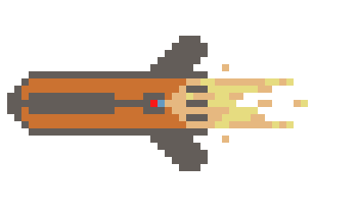
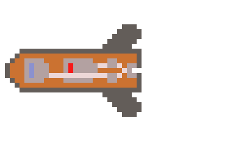
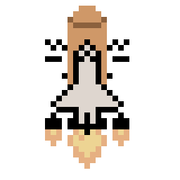

Welcome to the rocket booster page! Enjoy your stay.
What is a Rocket Booster?
A rocket booster is a powerful rocket used to help provide the thrust needded for spacecraft takeoff. Boosters are extreemly importaint in getting a spacecraft launched beyond Earth's orbit.
Liquid versus Solid RBs:
There are two primary types of (chemical) rocket boosters: Solid and Liquid. Below is a breif breakdown off the differences between the two as well as examples.
Solid Rocket boosters (SRB) are more simple in design and cheaper in cost compared to Liquid Rocket Boosters (LRB). Some of the earliest rockets utilized solid fuel, and even today it is still used in motor designs to provide the thrust needed for flight. They are a solid choice for a simple but powerful design.
When ignited, SRBs have no throttle control. This means that the propelent will burn at max thrust until used up. Look at the two figures below to see the difference in thrust between SRB and LRB.
Liquid Rocket Boosters (LRB) are more complex but they do offer more throttle control. In the diagram below there are two tanks, the fuel and oxidizer, which are connected to two pumps. At the pumps, the mixture goes into the combustion chamber which is released at the nozzle. LRBs can be shut off in an emergency, but once an SRB starts there is no stopping it.
Like all rockets, or things that contain flamables, there is a risk of damage, explosion, contamination, and destruction. Over time though, these risks have been mitigated, but they are never gone.
Notable LRB users
The Soviet Union did not exclusively use LRBs, but they did use them in many designs.
The Energia (Энергия) launch vehical used LRBs featuring the RD 170 liquid engine. Below is a figure of the rocket engine as well as the launch vehical carrying the Soviet Shuttle Buran (Буран). NOTE: The Soviet Shuttle is not to be confused with the American Space Shuttle.
Another example is the Soyuz (Союз) rocket. This launch vehical is part of the R-7 rocket family which includes the R-7 Semyorka, the worlds first ICBM. The Soyuz has transported both astronouts and cosmonauts to the ISS until 2020. Now, most of its launches are now for satellite deployment.
Notable SRB users
The United States of America
The Space Shuttle's SRBs are an example of Solid Rocket Boosters. (The two white rockets on the side of the orange external tank) These boosters provided a large majority of thrust at takeoff as well as the first few minuets of ascent.
To be continued:
To be continued...